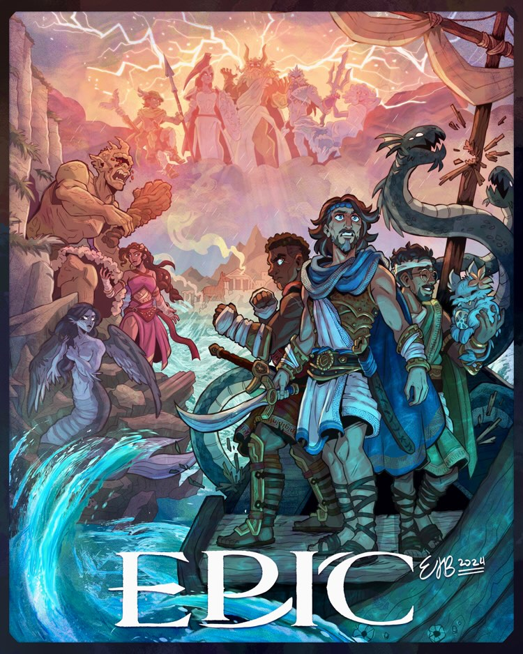
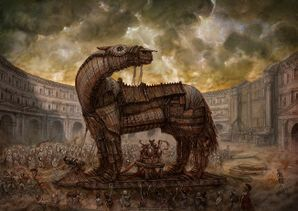
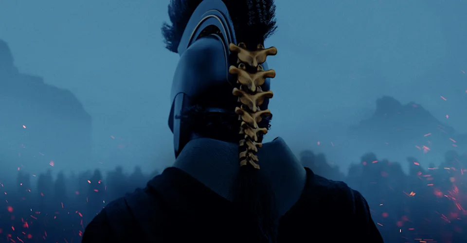
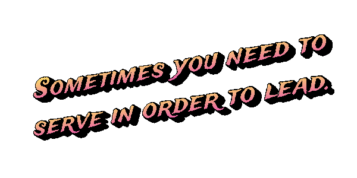

Web page created by Amelia

My topic is about a musical that tells the story of Odysseus, a famous greek hero who was known for his wits and brain rather than strength. It took him 20 years to make it back home to Ithica after defeating Troy. It is also one of the oldest pieces of literature still read today.

As Odysseus was trying to get home, many people back in Ithica believed he was dead and, since he was king, many suitors attempted to take the throne. This is why Penelope, Odysseus's wife, set up a challenge for the suitors that included Odysseus's bow and 12 axes.
Dive deeper into the Odyssey
| Major Event | What Happened | Importance | Result |
| Escape from Troy | Odysseus leaves after the war | Begins the journey | Starts voyage home |
| Cyclops Ecounter | Odysseus blinds Polyphemus | Shows his cleverness | Angers Poseidon |
| Return to Ithaca | Odysseus comes home | Climax of the story | Reclaims his kingdom |
Odysseus's journey is heavily influenced by the gods; he receives vital assistance from Athena, the goddess of wisdom, while enduring the wrath of Poseidon.

The Odyssey is neatly divided into 24 books, each one originally corresponding to a different letter of the Greek alphabet. This was a shrewd compositional choice, allowing the audience to easily call out specific sections of the epic poem during oral performances. In ancient Greece, bands would memorize or recite The Odyssey to crowds of listeners. This was long before the story was written down in its entirety. Having each book associated with a letter (alpha, beta, gamma, ect.) turned it into a kind of massive jukebox. If a listener wanted to hear about Odysseus's encounter with the Cyclops, they could shout out "Book 9!" or simply "Iota!"
"Yet, taught by time, my heart has learned to glow for other's good, and melt at other's woe."